مواد التباينLecture 1: CONTRAST AGENTS
نظري · م01 · 9.9 دقيقةأقسام المحاضرة (10)
- أهداف المحاضرةAims of this session
- التباينCONTRAST
- تاريخ مواد التباينHistory of contrast media
- لماذا تُستعمل مواد التباين؟Why contrast agents are used?
- أنواع مواد التباينContrast Media (CM)
- العوامل اليودية الذائبة في الماءWater-soluble iodine-based agents:
- استعمالات مواد التباين الذائبة في الماءWater soluble contrast media uses
- التفاعلات الضارة لمواد التباينAdverse reaction of contrast agents
- التأثيرات السامة على أعضاء معيّنةTOXIC EFFECTS ON SPECIFIC ORGANS
- مادة التباين اليودية في الحمل والرضاعةIodinated contrast in pregnancy and lactation
أهداف المحاضرةAims of this session
- 1. History of contrast media.تاريخ مواد التباين.
- 2. Why contrast agents are used?لماذا تُستعمل مواد التباين؟
- 3. Types of contrast agents used in clinical settings.أنواع مواد التباين المستعملة في الممارسة السريرية.
- 4. Methods of administrating contrast agents.طرق إعطاء مواد التباين.
- 5. Examples of examinations utilizing contrast agents.أمثلة على الفحوصات التي تُستعمل فيها مواد التباين.
- 6. Adverse reaction of contrast agents.التفاعلات الضارة لمواد التباين.
- 7. What are the desirable features of a contrast agent?ما الصفات المرغوبة في مادة التباين؟
التباينCONTRAST
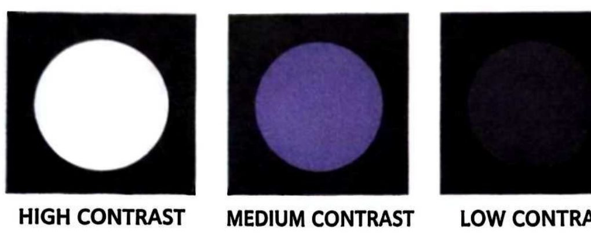
تاريخ مواد التباينHistory of contrast media
- • 1896 : WALTER BRADFORD discovered contrast media.1896: والتر برادفورد اكتشف مواد التباين.
- • 1897 : First report GI contrast study performed using Bismuth – TOIXICI.1897: أول تقرير عن فحص للجهاز الهضمي بمادة تباين، أُجري باستعمال البزموت (وكان سامّاً).
- • 1910 : Barium Sulphate used (safer).1910: استُعملت كبريتات الباريوم (أكثر أماناً).
- • 1920 : Sodium Iodide used which is treatment for syphilis.1920: استُعمل يوديد الصوديوم، وكان علاجاً لمرض الزهري.
- • Iodine: was found to be radio opaque to x-rays.اليود: وُجد أنه ظليل (معتم) للأشعة السينية.
- • 1923 : First reported IVU with sodium iodide solution.1923: أول تقرير عن تصوير الجهاز البولي الوريدي IVU باستعمال محلول يوديد الصوديوم.
لماذا تُستعمل مواد التباين؟Why contrast agents are used?
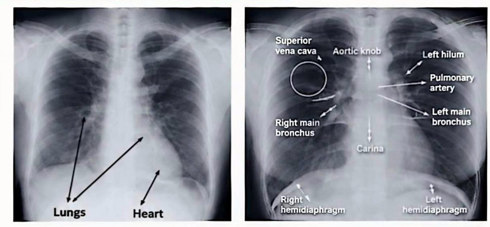
التصوير الشعاعي بالتباينContrast radiography:
Contrast radiography is a method of studying organs (to enhance the visibility of internal structures) using X-rays and the administration of a special dye, called a contrast medium.
التصوير الشعاعي بالتباين طريقة لدراسة الأعضاء (لتحسين رؤية البُنى الداخلية) باستعمال الأشعة السينية وإعطاء صبغة خاصة تُسمّى مادة التباين.
As you must know from physics of x ray when x ray beam hit an object (patient's body or body part) attenuation will happen to that beam with different attenuation values according to the composition of the object itself (bone, air, fluid, soft tissues).
كما تعلم من فيزياء الأشعة السينية، عندما تصطدم حزمة الأشعة بجسم (جسم المريض أو جزء منه) يحدث توهين لهذه الحزمة بقيم توهين مختلفة حسب تركيب الجسم نفسه (العظم، الهواء، السوائل، الأنسجة الرخوة).
- • Low attenuating material means it allows radiation to pass through it freely and is called (radiolucence) black colour on x ray film.المادة قليلة التوهين تعني أنها تسمح للأشعة بالمرور خلالها بحرية، وتُسمّى (شفافة للأشعة)، ولونها أسود على فلم الأشعة.
- • High attenuating material means it inhibit the passage of radiation through it and called (radiopaque) white colour on x ray film.المادة عالية التوهين تعني أنها تمنع مرور الأشعة خلالها، وتُسمّى (ظليلة)، ولونها أبيض على فلم الأشعة.
- • If the two organs have similar densities and similar average atomic numbers, then it is not possible to distinguish them on a radiograph, because no natural contrast exists.إذا كان للعضوين كثافتان متشابهتان ومتوسط عدد ذري متشابه، فلا يمكن التمييز بينهما في الصورة الشعاعية، لأنه لا يوجد تباين طبيعي.
- • For example; it is not possible to identify blood vessels within an organ, or to demonstrate the internal structure of the kidney, without artificially altering one of the following factors:مثلاً: لا يمكن تحديد الأوعية الدموية داخل عضو ما، أو إظهار البنية الداخلية للكلية، من دون تغيير أحد العوامل الآتية تغييراً اصطناعياً:
عاملان مهمّان في تباين العضو يمكن تغييرهما اصطناعياًTwo of the factors important in organ contrast can be artificially altered:
- 1. The density of an organ, and,كثافة العضو، و
- 2. More usefully, the average atomic number of a structure.والأكثر فائدة: متوسط العدد الذري للبنية.
أنواع مواد التباينContrast Media (CM)
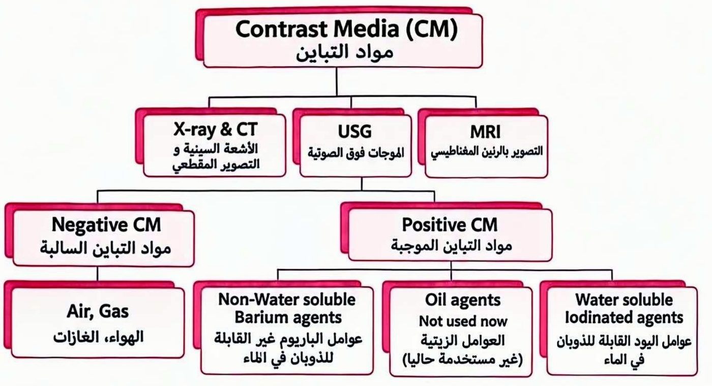
التباين السالب (شفاف للأشعة)NEGATIVE CONTRAST: (radiolucent)
- • Contrast media attenuate X-ray less than do the body soft tissue.مواد التباين السالبة توهّن الأشعة السينية أقل من الأنسجة الرخوة في الجسم.
- • The density of a hollow organ can be reduced by filling it with GAS or AIR, providing negative contrast.يمكن تقليل كثافة العضو المجوّف بملئه بالغاز أو الهواء، فيعطي تبايناً سالباً.
- • E.g. Air arthrogram, Double contrast barium examinations.مثال: تصوير المفصل بالهواء (Air arthrogram)، وفحوصات الباريوم بالتباين المزدوج.
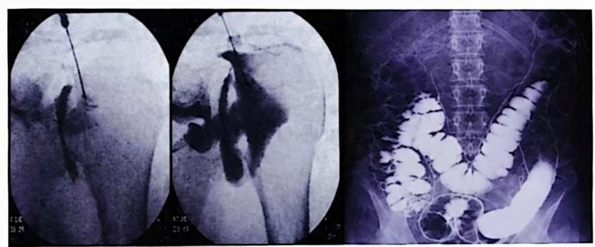
عوامل التباين الموجبة (ظليلة)Positive Contrast Agents (Radiopaque)
- • Contrast media attenuate X-ray more than do the body soft tissue.مواد التباين الموجبة توهّن الأشعة السينية أكثر من الأنسجة الرخوة في الجسم.
- • The average atomic number is INCREASED positive contrast.في التباين الموجب يكون متوسط العدد الذري مرتفعاً (مزداداً).
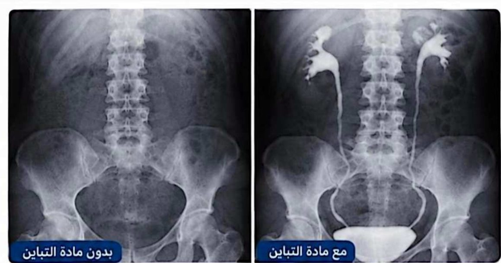
العوامل اليودية الذائبة في الماءWater-soluble iodine-based agents:
- • Chemical composition: - are based on a benzene ring to which three iodine atoms (1) are attached.التركيب الكيميائي: تعتمد على حلقة بنزين ترتبط بها ثلاث ذرات يود.
- • A monomer contains one benzene ring tri-iodinated.المونومر (أحادي الحلقة) يحتوي على حلقة بنزين واحدة ثلاثية اليود.
- • A dimer contains two benzene rings tri-iodinated.الديمر (ثنائي الحلقة) يحتوي على حلقتي بنزين ثلاثيتي اليود.
- • Iodine is radiopaque material so, it is used in composition of contrast media.اليود مادة ظليلة للأشعة، لذلك يُستعمل في تركيب مواد التباين.
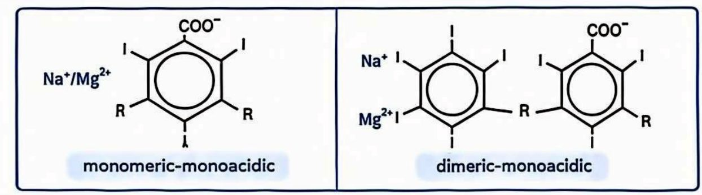
تنقسم عوامل التباين اليودية إلى مجموعتينIodine-based contras agents can be divided into two groups:
غير الأيونيةNon ionic CM
- • No electrical charge (that is why called non ionic)لا تحمل شحنة كهربائية (ولهذا تُسمّى غير أيونية).
- • Lower riskخطر أقل.
- • High cost $كلفة عالية.
- • Omnipaque : Iohexol // Ultravist: Iopromideأمثلة: أومنيباك (أيوهيكسول) // ألترافيست (أيوبروميد).
الأيونيةIonic CM
- • Electrical charged (which is responsible for the side effect of CM).مشحونة كهربائياً (وهذه الشحنة مسؤولة عن الآثار الجانبية لمادة التباين).
- • Higher riskخطر أعلى.
- • Low cost $كلفة أقل.
- • Urografin, Gastrografin, Angiograph, Trazograph, Conray.أمثلة: يوروغرافين، غاستروغرافين، أنجيوغراف، ترازوغراف، كونراي.
الأسموليةOsmolality
Osmolality describes the concentration of solute per kg of water, The osmolality of CM solutions is expressed in milliosmole/kg water, The osmolality of CM is dependent on the concentration.
الأسمولية تصف تركيز المذاب لكل كيلوغرام من الماء. وتُقاس أسمولية محاليل مواد التباين بوحدة ميلي أسمول/كغم ماء، وتعتمد أسمولية مادة التباين على تركيزها.
عالية الأسموليةHigh osmolality CM
- • Osmolality up to 5X serum (Toxicity)أسموليتها تصل إلى 5 أضعاف المصل (سُمّية).
- • Composed of salts which dissociate in water into anions (radiopaque) and cations.تتكون من أملاح تتفكك في الماء إلى أيونات سالبة (ظليلة للأشعة) وأيونات موجبة.
- • Preferred for Oralمفضّلة للاستعمال عن طريق الفم.
- • More side effects; More nephrotoxicآثار جانبية أكثر، وسُمّية كلوية أكثر.
- • E.g. Gastrografin, Urografinمثال: غاستروغرافين، يوروغرافين.
منخفضة الأسموليةLow osmolality CM
- • 2X serum osmolalityأسموليتها ضعف أسمولية المصل.
- • Non-dissociatingلا تتفكك.
- • Preferred for Intravascular and intrathecal administration.مفضّلة للإعطاء داخل الأوعية الدموية وداخل القراب (حول النخاع الشوكي).
- • Less side effects, less nephrotoxicآثار جانبية أقل، وسُمّية كلوية أقل.
- • E.g. Ultravist, omnipaque.مثال: ألترافيست، أومنيباك.
متساوية الأسموليةIso-osmolality CM
- • Approximately equals serumأسموليتها تساوي تقريباً أسمولية المصل.
- • Non-dissociatingلا تتفكك.
- • Preferred for intravascular administration.مفضّلة للإعطاء داخل الأوعية الدموية.
- • No side effects; No nephrotoxicلا آثار جانبية، ولا سُمّية كلوية.
- • E.g. Visipaque, Isovistمثال: فيزيباك، أيزوفيست.
The low- and iso-osmolality contrast media are 5-10 times safer than the HOCM and are used routinely in clinical practice.
مواد التباين منخفضة الأسمولية ومتساوية الأسمولية أكثر أماناً بـ 5–10 مرات من عالية الأسمولية (HOCM)، وتُستعمل روتينياً في الممارسة السريرية.
استعمالات مواد التباين الذائبة في الماءWater soluble contrast media uses
للاستعمال عن طريق الفمWater soluble contrast media for oral use
غاستروغرافينGastrographin
- • For CT scan of the abdomen and pelvisلفحص CT للبطن والحوض.
- • For GIT evaluation in cases of:لتقييم الجهاز الهضمي في حالات:
- • Suspected perforationالاشتباه بوجود انثقاب.
- • Suspected anastomotic leakageالاشتباه بتسرّب من مكان المفاغرة (الوصلة) الجراحية.
- • Suspected intestinal obstructionالاشتباه بوجود انسداد معوي.
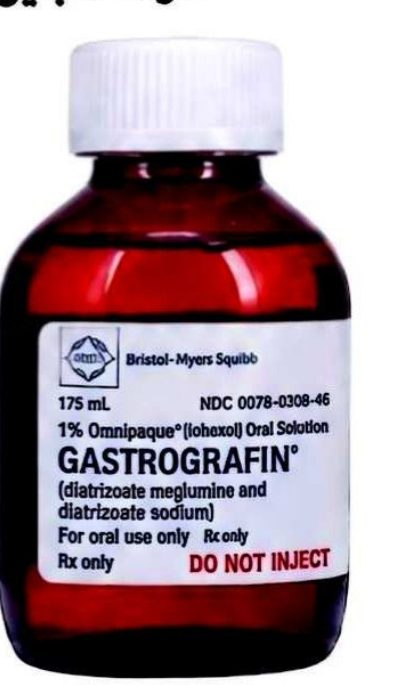
للحقن الوريديWater soluble contrast media for IV injection
- • Intravenous urography (IV): is an x-ray examination of the kidneys, ureters and urinary bladder that uses iodinated contrast material injected into veins.تصوير الجهاز البولي الوريدي (IV): فحص بالأشعة السينية للكليتين والحالبين والمثانة البولية، يستعمل مادة تباين يودية تُحقن في الأوردة.
- • All CT examination using contrast material CHEST, ABDOMEN, BRAIN, CT angiography of any vessel,... Etc.جميع فحوصات CT التي تستعمل مادة التباين: الصدر، والبطن، والدماغ، وتصوير الأوعية بالمفراس (CT angiography) لأي وعاء دموي... إلخ.
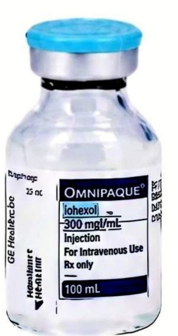
لإظهار أي قناة أو مجرىWater soluble contrast media used for any canal or duct opacification
- • Evaluation of the salivary gland [Sialography]تقييم الغدد اللعابية [تصوير الغدد اللعابية].
- • Injection in any external opening in the skin [Fistulography]الحقن في أي فتحة خارجية في الجلد [تصوير الناسور].
- • Evaluation of the urethra and urinary bladder [cysto urethrography]تقييم الإحليل والمثانة البولية [تصوير المثانة والإحليل].
- • Evaluation of the uterus and tubes [Hystro salpengography]تقييم الرحم وقناتي فالوب [تصوير الرحم والأنابيب بالصبغة].
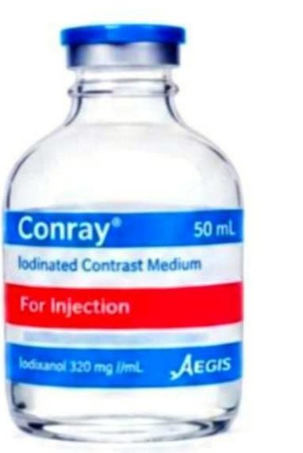
التفاعلات الضارة لمواد التباينAdverse reaction of contrast agents
Adverse Reactions Acute adverse reactions are defined as reactions occurring within the first hour following the contrast medium injection. divided into:
التفاعلات الضارة: التفاعلات الضارة الحادة تُعرَّف بأنها التفاعلات التي تحدث خلال الساعة الأولى بعد حقن مادة التباين، وتنقسم إلى:
- • Allergy-like (anaphylactic) reactions, which are unpredictable and unrelated to the amount of contrast medium.تفاعلات شبيهة بالحساسية (تأقّية): لا يمكن توقّعها، ولا ترتبط بكمية مادة التباين.
- • Non-allergy-like (chemo toxic) reactions, such as pain, a sensation of heat, or pulmonary edema produced by the increased osmotic load, which are dose-dependent.تفاعلات غير شبيهة بالحساسية (سُمّية كيميائية): مثل الألم، أو الإحساس بالحرارة، أو الوذمة الرئوية الناتجة عن زيادة الحمل الأسموزي، وهي تعتمد على الجرعة.
التفاعل مع مادة التباين المحقونة وريدياًReaction to contrast media injected intravenously
- • Nausea and vomitingالغثيان والتقيؤ.
- • Skin rashطفح جلدي.
- • Dyspnea and tachycardiaضيق التنفس وتسرّع القلب.
- • Hypotension and shockانخفاض ضغط الدم والصدمة.
- • Cardiac arrestتوقّف القلب.
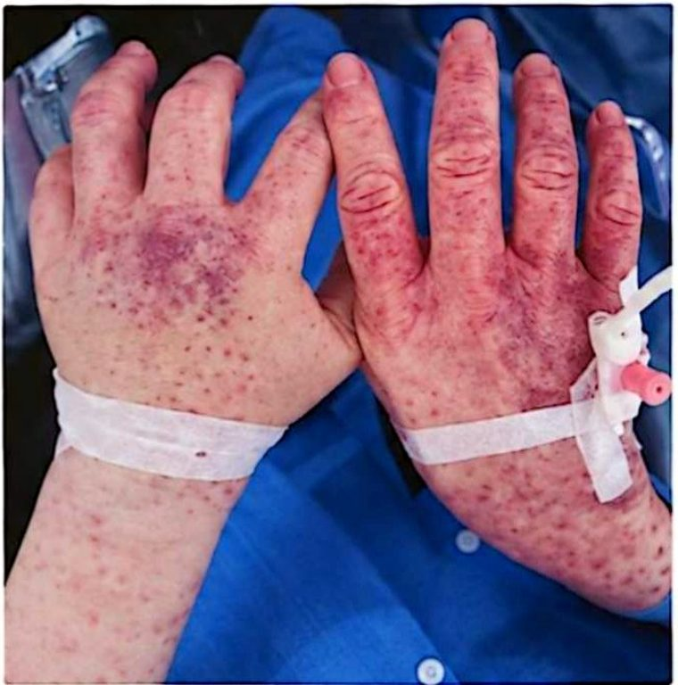
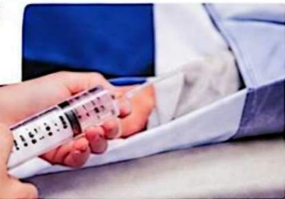
- • The toxicity of contrast media is a function of osmolarity, ionic charge (ionic contrast agents only), chemical structure (chemotoxicity).سُمّية مادة التباين تعتمد على الأسمولية، والشحنة الأيونية (في المواد الأيونية فقط)، والتركيب الكيميائي (السُّمّية الكيميائية).
- • Adverse reactions after administration of non-ionic iodinated contrast media are rare, occurring in less than 1% of all patients.التفاعلات الضارة بعد إعطاء مواد التباين اليودية غير الأيونية نادرة، وتحدث في أقل من 1% من جميع المرضى.
- • The vast majority are mild and self-limiting.أغلبيتها خفيفة وتزول من تلقاء نفسها.
- • The incidence of moderate or severe non-ionic contrast reactions is less than 0.001%.نسبة حدوث التفاعلات المتوسطة أو الشديدة لمواد التباين غير الأيونية أقل من 0.001%.
التأثيرات السامة على أعضاء معيّنةTOXIC EFFECTS ON SPECIFIC ORGANS
السُّمّية الوعائيةVascular toxicity
- 1. Pain at the injection site.ألم في موضع الحقن.
- 2. Pain extending up the arm-due to stasis of contrast medium.ألم يمتد إلى أعلى الذراع بسبب ركود مادة التباين.
السُّمّية القلبية الوعائيةCardiovascular toxicity
- 1. Arrhythmia (if Intracoronary injection).اضطراب نظم القلب (إذا كان الحقن داخل الشرايين التاجية).
- 2. Bradycardia or a systole.بطء القلب أو توقّف الانقباض.
- 3. Injection into the right heart or pulmonary artery causes systemic hypotension; injection into the left ventricle or aorta causes brief systemic hypertension.الحقن في الجانب الأيمن من القلب أو في الشريان الرئوي يسبّب انخفاض ضغط الدم الجهازي، والحقن في البطين الأيسر أو الأبهر يسبّب ارتفاعاً قصيراً في ضغط الدم الجهازي.
سُمّية الأنسجة الرخوةSoft-tissue toxicity:
- 1. Pain, swelling, and even sloughing of skin may occur from extravasation of contrast medium.قد يحدث ألم وتورّم، بل وتقشّر (انسلاخ) الجلد، بسبب تسرّب مادة التباين خارج الوعاء.
Treatment should consist of the application of cold packs and elevation of the limb. Systemic steroids, non-steroidal anti-inflammatory drugs and antibiotics have all been shown to be useful.
يجب أن يتضمّن العلاج استعمال الكمّادات الباردة ورفع الطرف. وقد ثبت أن الستيرويدات الجهازية، ومضادات الالتهاب غير الستيرويدية، والمضادات الحيوية كلها مفيدة.
السُّمّية الكلويةNephrotoxicity
There are a number of predisposing factors in Contrast-induced nephropathy (CIN).
هناك عدد من العوامل المهيّئة لاعتلال الكلية الناتج عن مادة التباين (CIN).
- 1. The single most important risk factor is pre-existing impairment of renal function; patients with normal renal function are at very low risk.أهم عامل خطر هو وجود قصور سابق في وظيفة الكلى؛ أما المرضى الذين وظيفة كلاهم طبيعية فخطرهم منخفض جداً.
- 2. Heart failure.قصور (عجز) القلب.
- 3. Hypovolaemia.نقص حجم الدم.
- 4. Diabetes mellitus.داء السكري.
- 5. Age > 70 years.العمر أكثر من 70 سنة.
- 6. Large doses of contrast medium.الجرعات الكبيرة من مادة التباين.
- 7. Renal transplant.زراعة الكلية.
- 8. Vascular disease.أمراض الأوعية الدموية.
إرشادات الوقاية من التفاعلات الكلوية الضارة لمادة التباين اليوديةGuidelines for prophylaxis of renal adverse reactions to iodinated contrast medium
- 1. Check if there is pre-existing renal impairment.تحقّق هل يوجد قصور سابق في وظيفة الكلى.
- 2. Serum creatinine should be measured within 1 week before the administration of contrast.يجب قياس الكرياتينين في المصل خلال أسبوع واحد قبل إعطاء مادة التباين.
مادة التباين اليودية في الحمل والرضاعةIodinated contrast in pregnancy and lactation
- 1. During pregnancy it is not recommended for a pregnant to be exposed to x-radiation or contrast media.خلال الحمل لا يُنصح بتعريض الحامل للأشعة السينية أو لمواد التباين.
- 2. During lactation it is considered safe for both mother and infant to continue breastfeeding after iodinated contrast administration.خلال الرضاعة يُعدّ آمناً للأم والرضيع الاستمرار في الرضاعة الطبيعية بعد إعطاء مادة التباين اليودية.
To be continued ........
يتبع...
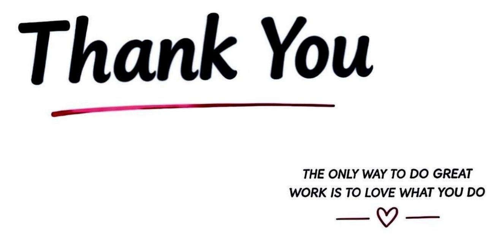
المحاضرة مسموعة
نص الأستاذ بالإنكليزي مثل الأصل · 9.9 دقيقة. اضغط أي جملة تسمعها، أو مصطلح منقّط تسمع لفظه ومعناه.
Aims of this sessionأهداف المحاضرة
Aims of this session
History of contrast media.
Why contrast agents are used?
Types of contrast agents used in clinical settings.
Methods of administrating contrast agents.
Examples of examinations utilizing contrast agents.
Adverse reaction of contrast agents.
What are the desirable features of a contrast agent?
CONTRASTالتباين
CONTRAST
CONTRAST: It is the difference in optical density between different parts of image.
History of contrast mediaتاريخ مواد التباين
History of contrast media
1896 : WALTER BRADFORD discovered contrast media.
1897 : First report GI contrast study performed using Bismuth – TOIXICI.
1910 : Barium Sulphate used (safer).
1920 : Sodium Iodide used which is treatment for syphilis.
Iodine: was found to be radio opaque to x-rays.
1923 : First reported IVU with sodium iodide solution.
Why contrast agents are used?لماذا تُستعمل مواد التباين؟
Why contrast agents are used?
Contrast radiography:
Contrast radiography is a method of studying organs (to enhance the visibility of internal structures) using X-rays and the administration of a special dye, called a contrast medium.
As you must know from physics of x ray when x ray beam hit an object (patient's body or body part) attenuation will happen to that beam with different attenuation values according to the composition of the object itself (bone, air, fluid, soft tissues).
Low attenuating material means it allows radiation to pass through it freely and is called (radiolucence) black colour on x ray film.
High attenuating material means it inhibit the passage of radiation through it and called (radiopaque) white colour on x ray film.
If the two organs have similar densities and similar average atomic numbers, then it is not possible to distinguish them on a radiograph, because no natural contrast exists.
For example; it is not possible to identify blood vessels within an organ, or to demonstrate the internal structure of the kidney, without artificially altering one of the following factors:
Two of the factors important in organ contrast can be artificially altered:
The density of an organ, and,
More usefully, the average atomic number of a structure.
Contrast Media (CM)أنواع مواد التباين
Contrast Media (CM)
NEGATIVE CONTRAST: (radiolucent)
Contrast media attenuate X-ray less than do the body soft tissue.
The density of a hollow organ can be reduced by filling it with GAS or AIR, providing negative contrast.
E.g. Air arthrogram, Double contrast barium examinations.
Positive Contrast Agents (Radiopaque)
Contrast media attenuate X-ray more than do the body soft tissue.
The average atomic number is INCREASED positive contrast.
Water-soluble iodine-based agents:العوامل اليودية الذائبة في الماء
Water-soluble iodine-based agents:
Chemical composition: - are based on a benzene ring to which three iodine atoms (1) are attached.
A monomer contains one benzene ring tri-iodinated.
A dimer contains two benzene rings tri-iodinated.
Iodine is radiopaque material so, it is used in composition of contrast media.
Iodine-based contras agents can be divided into two groups:
Non ionic CM
No electrical charge (that is why called non ionic)
Lower risk
High cost $
Omnipaque : Iohexol // Ultravist: Iopromide
Ionic CM
Electrical charged (which is responsible for the side effect of CM).
Higher risk
Low cost $
Urografin, Gastrografin, Angiograph, Trazograph, Conray.
Osmolality
Osmolality describes the concentration of solute per kg of water, The osmolality of CM solutions is expressed in milliosmole/kg water, The osmolality of CM is dependent on the concentration.
High osmolality CM
Osmolality up to 5X serum (Toxicity)
Composed of salts which dissociate in water into anions (radiopaque) and cations.
Preferred for Oral
More side effects; More nephrotoxic
E.g. Gastrografin, Urografin
Low osmolality CM
2X serum osmolality
Non-dissociating
Preferred for Intravascular and intrathecal administration.
Less side effects, less nephrotoxic
E.g. Ultravist, omnipaque.
Iso-osmolality CM
Approximately equals serum
Non-dissociating
Preferred for intravascular administration.
No side effects; No nephrotoxic
E.g. Visipaque, Isovist
The low- and iso-osmolality contrast media are 5-10 times safer than the HOCM and are used routinely in clinical practice.
Water soluble contrast media usesاستعمالات مواد التباين الذائبة في الماء
Water soluble contrast media uses
Water soluble contrast media for oral use
Gastrographin
For CT scan of the abdomen and pelvis
For GIT evaluation in cases of:
Suspected perforation
Suspected anastomotic leakage
Suspected intestinal obstruction
Water soluble contrast media for IV injection
Intravenous urography (IV): is an x-ray examination of the kidneys, ureters and urinary bladder that uses iodinated contrast material injected into veins.
All CT examination using contrast material CHEST, ABDOMEN, BRAIN, CT angiography of any vessel,... Etc.
Water soluble contrast media used for any canal or duct opacification
Evaluation of the salivary gland [Sialography]
Injection in any external opening in the skin [Fistulography]
Evaluation of the urethra and urinary bladder [cysto urethrography]
Evaluation of the uterus and tubes [Hystro salpengography]
Adverse reaction of contrast agentsالتفاعلات الضارة لمواد التباين
Adverse reaction of contrast agents
Adverse Reactions Acute adverse reactions are defined as reactions occurring within the first hour following the contrast medium injection. divided into:
Allergy-like (anaphylactic) reactions, which are unpredictable and unrelated to the amount of contrast medium.
Non-allergy-like (chemo toxic) reactions, such as pain, a sensation of heat, or pulmonary edema produced by the increased osmotic load, which are dose-dependent.
Reaction to contrast media injected intravenously
Nausea and vomiting
Skin rash
Dyspnea and tachycardia
Hypotension and shock
Cardiac arrest
The toxicity of contrast media is a function of osmolarity, ionic charge (ionic contrast agents only), chemical structure (chemotoxicity).
Adverse reactions after administration of non-ionic iodinated contrast media are rare, occurring in less than 1% of all patients.
The vast majority are mild and self-limiting.
The incidence of moderate or severe non-ionic contrast reactions is less than 0.001%.
TOXIC EFFECTS ON SPECIFIC ORGANSالتأثيرات السامة على أعضاء معيّنة
TOXIC EFFECTS ON SPECIFIC ORGANS
Vascular toxicity
Pain at the injection site.
Pain extending up the arm-due to stasis of contrast medium.
Cardiovascular toxicity
Arrhythmia (if Intracoronary injection).
Bradycardia or a systole.
Injection into the right heart or pulmonary artery causes systemic hypotension; injection into the left ventricle or aorta causes brief systemic hypertension.
Soft-tissue toxicity:
Pain, swelling, and even sloughing of skin may occur from extravasation of contrast medium.
Treatment should consist of the application of cold packs and elevation of the limb. Systemic steroids, non-steroidal anti-inflammatory drugs and antibiotics have all been shown to be useful.
Nephrotoxicity
There are a number of predisposing factors in Contrast-induced nephropathy (CIN).
The single most important risk factor is pre-existing impairment of renal function; patients with normal renal function are at very low risk.
Heart failure.
Hypovolaemia.
Diabetes mellitus.
Age > 70 years.
Large doses of contrast medium.
Renal transplant.
Vascular disease.
Guidelines for prophylaxis of renal adverse reactions to iodinated contrast medium
Check if there is pre-existing renal impairment.
Serum creatinine should be measured within 1 week before the administration of contrast.
Iodinated contrast in pregnancy and lactationمادة التباين اليودية في الحمل والرضاعة
Iodinated contrast in pregnancy and lactation
During pregnancy it is not recommended for a pregnant to be exposed to x-radiation or contrast media.
During lactation it is considered safe for both mother and infant to continue breastfeeding after iodinated contrast administration.
To be continued ........
39 سؤال من نص المحاضرة، ويّا «ليش صح» بعد كل جواب.
ابدأ الاختباراضغط أي مصطلح منقّط تسمع لفظه ومعناه.
PDF ثنائي اللغة: نص الأستاذ + الترجمة + الخلاصة + الأسئلة · 1.4 MB
تحميل الملف